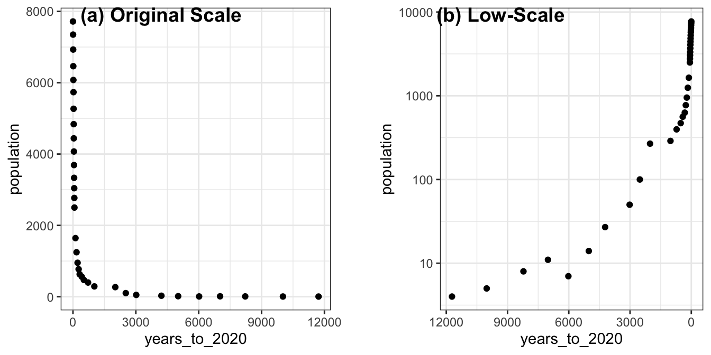

Chapter 22 Coordinate
本章節談論的是視覺化圖表的座標軸，本章節所涵蓋的概念可參考Claus O. Wilke所著之Fundamentals of Data Visualization的Chap3 Coordination & Axis與Chapter 8 Visualizing distributions: Empirical cumulative distribution functions and q-q plots。
22.1 NYT: Population Growth
紐時這篇報導「When Did the Anthropocene Start? Scientists Closer to Saying When. - The New York Times (nytimes.com)」討論了人類活動對地球所產生的深遠影響，並探討人類是否已經進入了一個新的地質時期，被稱為「人新世」。報導指出，人類的經濟活動、能源消耗和人口增長是人新世的主要因素，並且這些因素已經在地球上留下了不可磨滅的痕跡。報導也提到，地質學家已經發現了人新世的證據，包括核爆炸中的鈽同位素、肥料中的氮和發電廠的灰燼等。然而，報導也問道，人新世是否真的已經開始，以及它的開始點是否應該是農業革命、工業革命、核彈（77年前）或其他發展。

22.1.1 Parsing table from pdf
至R4CSS/data可以下載到本範例所用的資料（是一個pdf檔案）https://github.com/p4css/R4CSS/raw/master/data/world_population_change.pdf。
我們可使用tabulizer這個套件來萃取PDF文件中的表格，官方雖然提供cran可以直接安裝，但有可能會遇到R的版本不符要求而安裝不起來的情形。此時可用第二種方法，直接從github上安裝該套件。
程式碼使用 extract_tables() 函數從指定的PDF文件中提取表格數據，並將其存儲在 tables 變量中。在這個函數中，我們指定了要從第1頁中提取表格數據。
# Method 1
# install.packages("tabulizer")
# Method 2
# if (!require("remotes")) {
# install.packages("remotes")
# }
# remotes::install_github(c("ropensci/tabulizerjars", "ropensci/tabulizer"))
library(tidyverse)
library(tabulizer)
# Extract the table
tables <- extract_tables('data/world_population_change.pdf', pages = 1)
# Extract the first element of the variable
raw <- as.data.frame(tables[[1]])
population_by_year <- raw %>%
select(1, 2) %>%
slice(-c(1:4)) %>%
rename(years_to_2020 = V1, population = V2)
# select(years_to_2020 = v1, population = v2)
# mutate(years_to_2020 = v1, population = v2)22.1.2 X and Y with log-scale
通常情況下，當數據範圍很大，且存在極端值或者偏離值時，使用對數轉換可以更好地展示數據的分佈情況。在這種情況下，你可以使用 scale_x_log10() 或 scale_y_log10() 函數將 x 軸或 y 軸轉換為對數刻度。
例如，如果你有一個數據集，其中一個變量的數值範圍從1到100000，且大多數數據會集中在較小的值上，那麼使用線性刻度將導致數據在圖形中的分佈不平衡，而較大的值會集中在圖形的邊緣或者消失在圖形之外。在這種情況下，使用對數刻度可以更好地展示數據的分佈情況，並且可以更好地顯示較大值之間的差異。而上述資料便有這樣的特色，尤其是在Y軸方向，一開始人口增加量不多，後來指數成長，此時若使用線性尺度，會看不清楚一開始的人口增加量。
library(cowplot)
load("data/world_population_change.rda")
population_by_year## years_to_2020 population
## 1 11,720 4
## 2 10,020 5
## 3 8220 8
## 4 7020 11
## 5 6020 7
## 6 5020 14
## 7 4220 27
## 8 3020 50
## 9 2520 100
## 10 2020 268
## 11 1020 289
## 12 720 397
## 13 520 471
## 14 420 561
## 15 320 629
## 16 270 772
## 17 220 951
## 18 170 1247
## 19 120 1643
## 20 70 2499
## 21 65 2769
## 22 60 3042
## 23 55 3333
## 24 50 3691
## 25 45 4071
## 26 40 4440
## 27 35 4838
## 28 30 5269
## 29 25 5735
## 30 20 6076
## 31 15 6463
## 32 10 6930
## 33 5 7349
## 34 0 7717toplot <- population_by_year %>%
mutate(years_to_2020 = map(years_to_2020, ~(str_remove(., ",")))) %>%
mutate(years_to_2020 = as.numeric(years_to_2020),
population = as.numeric(population))
toplot %>% head## years_to_2020 population
## 1 11720 4
## 2 10020 5
## 3 8220 8
## 4 7020 11
## 5 6020 7
## 6 5020 14p1 <- toplot %>%
ggplot() +
aes(x=years_to_2020, y=population) +
geom_point() +
theme_bw()
p2 <- toplot %>%
ggplot() +
aes(x=years_to_2020, y=population) +
geom_point() +
scale_x_log10() + scale_y_log10() +
scale_x_reverse() +
theme_bw()
cowplot::plot_grid(
p1, NULL, p2,
labels = c("(a) Original Scale", "", "(b) Low-Scale"),
nrow = 1, rel_widths = c(1, 0.1, 1)
)
22.2 Order as axis
學術論文若要呈現一群數據的分佈時，最常用的是密度（分佈）函數、累積分佈函數，最常視覺化的方法是密度分佈圖（geom_density()）或直方圖（geom_histogram())。然而，對新聞等強調「說故事」的文體而言，說故事的技巧往往不是「那一群資源多或資源少的對象」，而經常要直指「那個對象」，要能夠看得見所敘述的對象在圖中的位置。此時，用密度分佈來呈現的話，只能看出，該對象在分佈的某個位置；但可以改用將資料對象根據某個數據來排序後，繪製折現圖的方式來表現。例如，若要繪製一個班級的成績分佈，通常X軸是分數（組），Y軸是獲得該分數（組）的人數；但其實可以將個體依照分數來做排序，Y軸不是某個分數（組）的個數，而是每個排序後的個體，而且以排序後的序號（Ranking）來表示。用折線圖繪製後，一樣可以看出分數的分佈，但卻能夠直接標記敘事中的某個對象是Y軸中得哪個點。
22.2.1

Figure 3.5: Population numbers of Texas counties relative to their median value. Select counties are highlighted by name. The dashed line indicates a ratio of 1, corresponding to a county with median population number. The most populous counties have approximately 100 times more inhabitants than the median county, and the least populous counties have approximately 100 times fewer inhabitants than the median county. Data source: 2010 Decennial U.S. Census.
See What’s Going On in This Graph? | Vaccination by Country fromWhat Data Shows About Vaccine Supply and Demand in the Most Vulnerable Places - The New York Times (nytimes.com)
The original chart is animated along the timeline.What Data Shows About Vaccine Supply and Demand in the Most Vulnerable Places - The New York Times (nytimes.com)

22.3 Log-scale
raw <- read_csv("data/opendata107Y020.csv", show_col_types = FALSE) %>%
slice(-1) %>%
type_convert()
toplot <- raw %>%
select(site_id, village, edu_age_15up_total) %>%
arrange(desc(edu_age_15up_total)) %>%
mutate(index = row_number()) %>%
mutate(label = ifelse(index <= 5 | index > n()-5, paste0(site_id, village), ""))
library(ggrepel)
p2 <- toplot %>% ggplot() + aes(index, edu_age_15up_total) +
geom_point(alpha=0.5, color="royalblue") +
geom_text_repel(aes(label = label), point.padding = .4, color = "black",
min.segment.length = 0, family = "Heiti TC Light") +
theme(axis.text.x=element_blank()) +
scale_y_log10(breaks = c(0, 1, 10, 100, 1000, 10000)) +
theme_minimal()
p1 <- toplot %>% ggplot() + aes(index, edu_age_15up_total) +
geom_point(alpha=0.5, color="royalblue") +
theme(axis.text.x=element_blank()) +
theme_minimal()
cowplot::plot_grid(
p2, NULL, p1,
labels = c("a", "", "b"), nrow = 1, rel_widths = c(1, 0.1, 1)
)
library(tidyverse)
library(gghighlight)22.4
22.5 Square-root scale
Chap3 Coordination & Axis Fundamentals of Data Visualization (clauswilke.com)

Figure 3.8: Areas of Northeastern U.S. states. (a) Areas shown on a linear scale. (b) Areas shown on a square-root scale. Data source: Google.
前面是視覺化了各村里大於十五歲以上人口的人口數分佈，採用對數尺度（log-scale）可以觀察到比較小的村里。那有什麼是適合用平方根尺度（sqrt-scale）的呢？是土地嗎？密度嗎？還是人口數？是村里等級嗎？鄉鎮市區等級嗎？還是縣市等級？
town <- read_csv("data/tw_population_opendata110N010.csv") %>%
slice(-1, -(370:375)) %>%
type_convert()
town %>%
arrange(desc(area)) %>%
mutate(index = row_number()) %>%
ggplot() + aes(index, area) %>%
geom_col(fill="skyblue") +
scale_y_sqrt() +
theme_minimal()
Figure 22.1: (ref:population-area)
county <- town %>%
mutate(county = str_sub(site_id, 1, 3)) %>%
group_by(county) %>%
summarize(
area = sum(area),
people_total = sum(people_total)
) %>%
ungroup()
p1 <- county %>%
arrange(desc(people_total)) %>%
mutate(index = row_number()) %>%
ggplot() + aes(index, people_total) %>%
geom_col(fill="lightgrey") +
# scale_y_sqrt() +
theme_minimal()
p2 <- county %>%
arrange(desc(people_total)) %>%
mutate(index = row_number()) %>%
ggplot() + aes(index, people_total) %>%
geom_col(fill="khaki") +
scale_y_sqrt(breaks=c(0, 250000, 500000, 1000000, 2000000, 4000000)) +
theme_minimal()
cowplot::plot_grid(
p1, p2,
labels = c("a", "b"),
nrow = 1
)
Figure 22.2: (ref:population-area)
22.6 Increasing percentage as Y
22.6.1 NYT: Net Worth by Age Group
LEARNING NOTES
Median for Inequality
這個教學案例來自紐約時報的「What’s going on in this gragh」系列資料視覺化教學之Teach About Inequality With These 28 New York Times Graphs - The New York Times (nytimes.com) 。該圖表呈現在不同年代、不同年齡層的人所擁有的淨資產（包含土地、存款、投資等減去債務）。該圖表的結果指出，在不同年代的老年人是越來越有錢，但年輕人卻越來越窮（該曲線為減去1989年

22.6.2 Read and sort data
Sorted by arrange() function.
p1 <- read_csv("data/interactive_bulletin_charts_agecl_median.csv") %>%
select(year, Category, Net_Worth) %>%
group_by(Category) %>%
arrange(year) %>%
ungroup()
p1 %>% filter(year <= 1992) %>% knitr::kable()| year | Category | Net_Worth |
|---|---|---|
| 1989 | Less than 35 | 16.17019 |
| 1989 | 35-44 | 112.47530 |
| 1989 | 45-54 | 195.11630 |
| 1989 | 55-64 | 195.25554 |
| 1989 | 65-74 | 154.34277 |
| 1989 | 75 or older | 144.29855 |
| 1992 | Less than 35 | 16.60780 |
| 1992 | 35-44 | 79.91050 |
| 1992 | 45-54 | 139.97745 |
| 1992 | 55-64 | 203.44104 |
| 1992 | 65-74 | 176.44667 |
| 1992 | 75 or older | 155.35173 |
p1 %>% ggplot() + aes(year, Net_Worth, color = Category) +
geom_line() +
geom_point() +
gghighlight(Category %in% c("65-74", "Less than 35")) +
theme_minimal() +
scale_x_continuous(breaks = NULL) +
theme(panel.background = element_rect(fill = "white",
colour = "white",
size = 0.5, linetype = "solid"))p2 <- read_csv("data/interactive_bulletin_charts_agecl_median.csv") %>%
select(year, Category, NW = Net_Worth) %>%
group_by(Category) %>%
arrange(year) %>%
mutate(increase = (NW-first(NW))/first(NW)) %>%
ungroup()
p2 %>% filter(year <= 1992) %>% knitr::kable()| year | Category | NW | increase |
|---|---|---|---|
| 1989 | Less than 35 | 16.17019 | 0.0000000 |
| 1989 | 35-44 | 112.47530 | 0.0000000 |
| 1989 | 45-54 | 195.11630 | 0.0000000 |
| 1989 | 55-64 | 195.25554 | 0.0000000 |
| 1989 | 65-74 | 154.34277 | 0.0000000 |
| 1989 | 75 or older | 144.29855 | 0.0000000 |
| 1992 | Less than 35 | 16.60780 | 0.0270627 |
| 1992 | 35-44 | 79.91050 | -0.2895285 |
| 1992 | 45-54 | 139.97745 | -0.2825948 |
| 1992 | 55-64 | 203.44104 | 0.0419220 |
| 1992 | 65-74 | 176.44667 | 0.1432131 |
| 1992 | 75 or older | 155.35173 | 0.0765994 |
美國35歲以下的年輕人的中位淨資產比起年長的美國人來說，一開始平均貧窮得多。從「Less than 35」這條線看來，現在的年輕世代比起2004年的年輕世代所擁有的淨資產低了40%。相比之下，65歲以上的美國人現在的淨資產，相較於2004年增加了9%。隨著時代變化，可想像會有一群人的淨資產越來越多，只是現在從這個圖表看來，年輕人所擁有的淨資產相較於過去是越來越低的，多半流入了成年人和老年人手中。
p2 %>% ggplot() + aes(year, increase, color = Category) +
geom_line() +
geom_point() +
gghighlight(Category %in% c("65-74", "Less than 35")) +
theme_minimal() +
scale_y_continuous(labels=scales::parse_format()) +
scale_x_continuous(breaks = NULL) +
theme(panel.background = element_rect(fill = "white",
colour = "white",
size = 0.5, linetype = "solid"))
22.7 X/Y aspect ratio
22.7.1 UNICEF-Optimistic (WGOITH)
https://www.nytimes.com/2021/11/17/upshot/global-survey-optimism.html https://changingchildhood.unicef.org/about
plot.opt <- read_csv("data/unicef-changing-childhood-data.csv") %>%
select(country = WP5, age = WP22140, bw = WP22092) %>%
mutate(country = ordered(country,
levels=c(1, 3, 4, 10, 11, 12,
13, 14, 17, 29, 31,
33, 35, 36, 60, 61,
77, 79, 81, 87, 165),
labels=c("USA", "Morocco", "Lebanon",
"Indonesia", "Bangladesh",
"UK", "France", "Germany",
"Spain", "Japan", "India",
"Brazil", "Nigeria", "Kenya",
"Ethiopia", "Mali", "Ukraine",
"Cameroon", "Zimbabwe",
"Argentina", "Peru"))) %>%
count(country, age, bw) %>%
group_by(country, age) %>%
mutate(perc = n/sum(n)) %>%
ungroup() %>%
filter(bw == 1) %>%
select(country, age, perc) %>%
spread(age, perc) %>%
rename(`15-24y` = `1`, `40+y` = `2`)
plot.opt %>% head(10) %>% knitr::kable()| country | 15-24y | 40+y |
|---|---|---|
| USA | 0.6679842 | 0.4611465 |
| Morocco | 0.4365079 | 0.4735812 |
| Lebanon | 0.5467197 | 0.4435798 |
| Indonesia | 0.7920605 | 0.8027344 |
| Bangladesh | 0.4624506 | 0.4319527 |
| UK | 0.5040000 | 0.4140000 |
| France | 0.3900000 | 0.2640000 |
| Germany | 0.5900000 | 0.3860000 |
| Spain | 0.5160000 | 0.3340000 |
| Japan | 0.6367265 | 0.2586873 |
plot.opt %>%
ggplot() + aes(`40+y`, `15-24y`, label = country) +
geom_point(color = "skyblue", size = 2) +
xlim(0, 1) + ylim(0,1) +
geom_text(hjust = -0.1, vjust = -0.5) +
geom_abline(intercept = 0, slop = 1,
color="lightgrey", alpha=0.5, linetype="dashed") +
theme_minimal() +
theme(aspect.ratio=1)